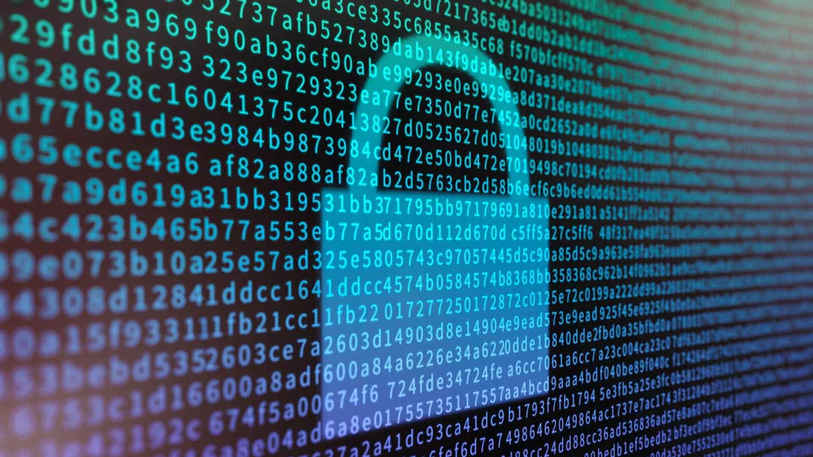

Informazioni Generali
Il percorso PCTO - Ricercatore tra Matematica e Fisica è stato svolto presso il Dipartimento di Matematica e Fisica dell'Uiversità degli studi di Roma Tre tra il 10 e il 14 Giugno dell'anno 2024, giorni da 8 ore ciascuno, quindi, con un totale di 45 ore complessive. Le attività sono state seguite da professori, dottorandi e studenti universitari, i quali ci hanno guidato attraverso un'esperienza formativa interessante e coinvolgente.
Argomenti Trattati
Questo percorso ha toccato molti aspetti e argomenti che si affrontano all'interno dell'ambiente universitario, passando tra le singole lezioni e i laboratori dandoci un assaggio di quel che potrebbe essere un nostro futuro. Le lezioni sono state molto interessanti e ricche di contenuti,
e in presenza di domande i professori, e tutti coloro che erano li per noi, non esitavano a soddisfarle, tenendoci così sempre connessi e attivi verso le attività da svolgere.
Le principali tematiche affrontate durante questo percorso sono state:
- Matematica analitica e Geometria, con le quali abbiamo affrontato problemi riguardanti i Grafi;
- Crittografia, che ci ha permesso di capire come tutti i messaggi inviati attraverso Internet riescono a rimanere indecifrabili a terzi; 
- Fisica dei pianeti nel nostro sistema solare, ciò ha permesso noi di venire meglio a conoscenza della storia del nostro sistema solare e di come riusciamo a capire bene esso, ma anche di come potremmo farlo meglio tramite missioni spaziali future;
- Astrofisica, con essa abbiamo compreso la storia della conoscenza dello spazio quindi di come siamo arrivati alle conoscenze odierne, toccando anche concetti in maniera più approfondita trattando concetti come quelli di spazio-tempo, distanze astronomiche, buchi neri, radiazioni elettromagnetiche etc...;
- Calcolo infinitesimale, l'utilizzo e l'applicazione di limiti, derivate e integrali ci ha permesso di comprendere bene quanto siano importanti ed essenziali per la ricerca in ambito scientifico e non;
- Attività laboratoriali, tra cui l'utilizzo di un telescopio solare per vedere il sole con "occhi diversi" nell'AstroGarden del Dipartimento, analisi dei dati prelevati da un telescopio internazionale che è stato puntato verso una Pulsar e grazie ad un Fisico ed un Ingegnere dell'INFN abbiamo potuto visionare tramite un Visore VR (realtà aumentata) lo scontro che avviene tra due particelle all'interno di un Acceleratore di Particelle.
Considerazioni Personali
Per quanto riguarda il mio punto di vista personale questa è stata un esperienza molto importante per il mio percorso, infatti ho approfondito molti concetti dal punto di vista teorico e applicativo; inoltre, conoscendo molte persone con alcuni miei stessi interessi, ho condiviso le mie opinioni confrontandole con le altre arrivando così a conclusioni migliori. Quindi, a mio parere, è stata un esperienza rigorosamente formativa ma anche intervallata da momenti di svago insieme agli altri ragazzi che come me hanno partecipato a questo PCTO.
Conclusioni
In conclusione, questo percorso, permettendomi di interfacciarmi direttamente al mondo universitario, mi ha reso più deciso sulla mia scelta, ovvero quella di continuare gli studi dopo il Liceo, in particolare quelli di Matematica e Fisica; un percorso che desidero molto fare per la mia grande passione verso le scienze ma nello specifico verso la Fisica, la quale non smette mai di stupirmi.